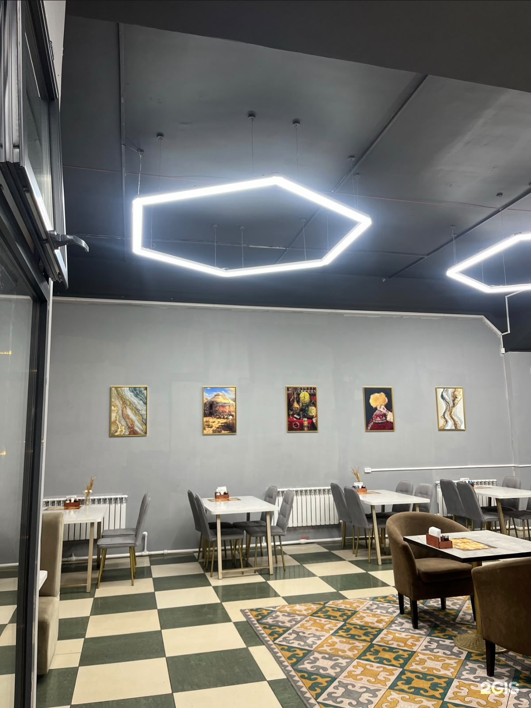

Қарағанды қаласындағы «Dostyk restaurant» ұлттық тағамға көңіл бөлетін шағын дәмхана. Мұнда қонақтарға палау, сорпа, лағман, салат және шай ұсынылады. Бұл сайт дәмхананың негізгі мәліметін бір жерге жинайды.
Қонақтар ас мәзірінен сүйікті тағамын қарап, алдын ала тапсырыс бере алады. Біз үшін жайлы қызмет, таза дастарқан және тұрақты дәм маңызды.

Дәмхана ішінде қонақтарға жайлы орын, отбасылық дастарқан және ыстық шай ұсынылады. Бұл мәтін суретпен бірге float қасиетін көрсету үшін жазылды.
Бұл сөйлем float әсерінен кейін қалыпты мәтін ағынын қайта бастайды.